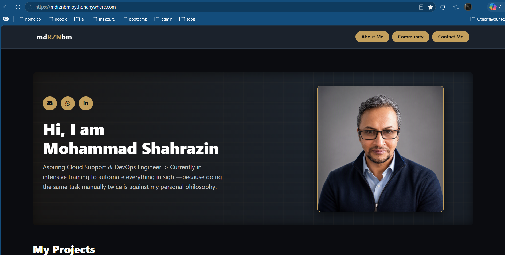
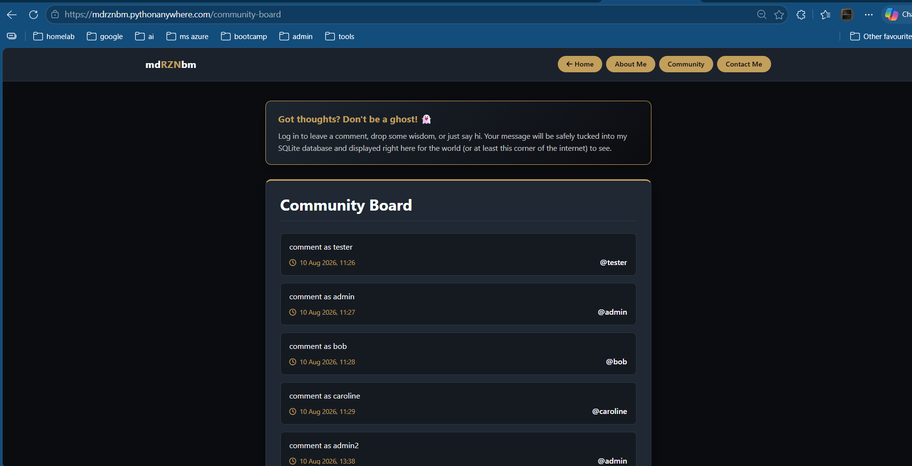
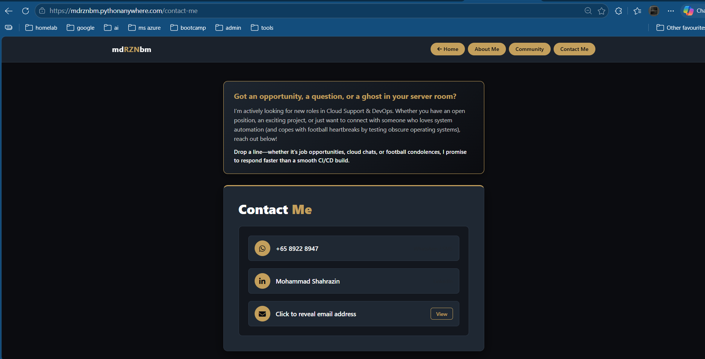
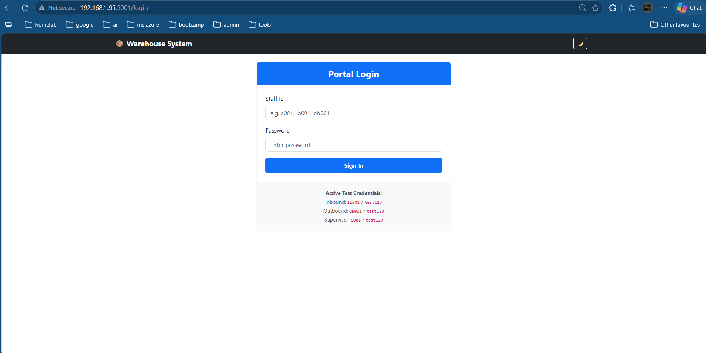
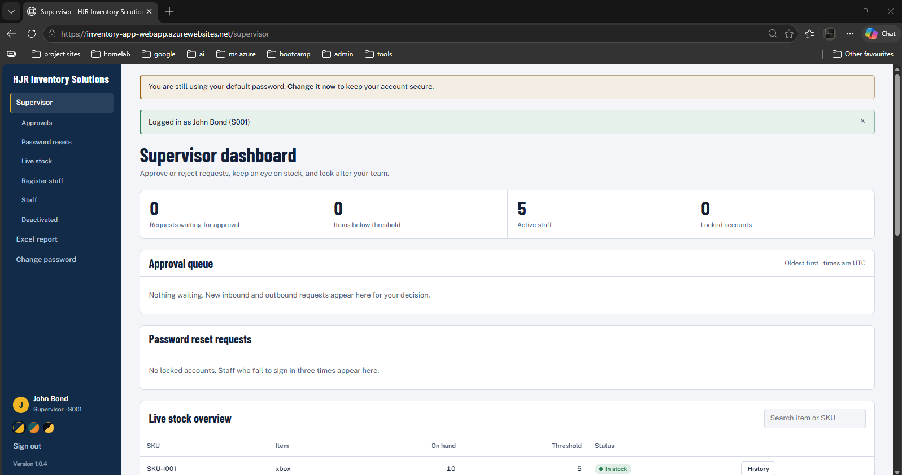
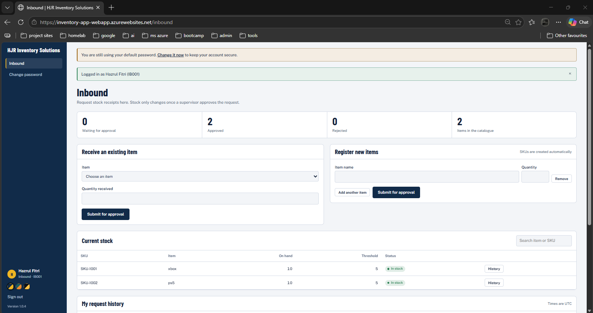
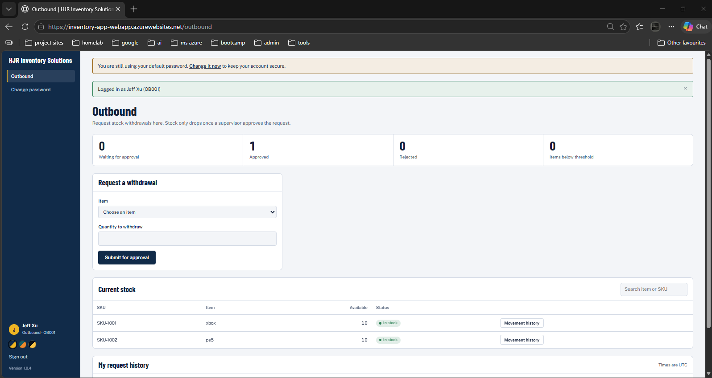

Singapore
I'm an aspiring Cloud Support & DevOps Engineer undergoing intensive training in cloud infrastructure, containerization, and CI/CD pipelines. I'm comfortable across Linux, SQLite & MySQL, Python scripting, and building automation routines — and I'm looking for an entry-level role where I can put that hands-on foundation to work.
Currently completing an intensive 3-month Cloud Support & DevOps bootcamp with Generation, covering Linux, Python, Microsoft Azure fundamentals, Docker, Terraform, and Ansible. Alongside the bootcamp, I run a self-hosted Proxmox home lab to practice these skills hands-on and support my household's home network.



A Flask-based personal portfolio site with a community comment board, built to learn Flask fundamentals. Later became my testing ground for containerizing an app with Docker, deploying to a self-hosted Kubernetes cluster, and building a CI/CD pipeline with Azure DevOps.
Built with: Flask, Docker, Kubernetes, Azure DevOps
Contributors: Sole developer
@app.route("/community-board", methods=["GET", "POST"])
def community_board():
if request.method == "GET":
return render_template("community_board.html", comments=Comment.query.all())
if not current_user.is_authenticated:
return redirect(url_for('login'))
comment = Comment(content=request.form["contents"], commenter=current_user)
db.session.add(comment)
db.session.commit()
return redirect(url_for('community_board'))



A role-based warehouse inventory system with separate supervisor, inbound, and outbound dashboards, full transaction accountability tracking, and account security features — currently being containerized and deployed to Azure as my bootcamp final project.
Built with: Flask, PostgreSQL, Docker, Azure
Contributors: Repo owner
class Transaction(db.Model):
__tablename__ = 'transactions'
id = db.Column(db.Integer, primary_key=True)
txn_type = db.Column(db.String(10), nullable=False)
quantity = db.Column(db.Integer, nullable=False)
status = db.Column(db.String(10), default='PENDING', nullable=False)
actioned_by_user_id = db.Column(db.Integer, db.ForeignKey('users.id'), nullable=True)
actioned_by = db.relationship('User', foreign_keys=[actioned_by_user_id])